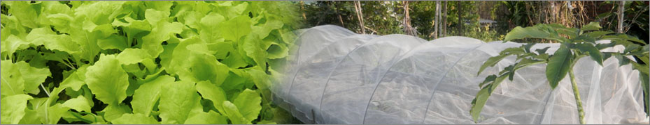

防蟲網特殊性：無需使用殺蟲劑及農藥
昆蟲會因為觸碰防蟲網無行動能力而死亡，並非使用殺蟲劑或農藥殺蟲。
不致於汙染重要水源又能保護環境增加農友產量與收益。
不致於汙染重要水源又能保護環境增加農友產量與收益。
原理與特點
環保防蟲生態網：仍具有網(膜)原來的功能強度，抗紫外線、耐腐蝕、耐老化………等。
又增加了觸殺效果，可反覆回收使用、尤其適用於原生態、農業、養殖業、及居家環境。
功能
環保防蟲生態網(膜)，除了阻隔還有觸殺蚊蟲的效果，具綠色環保，人與動植物不會產生任何危害。
種類
- 1.環境衛生防蟲網：
紗窗、紗門、窗簾、門簾、帳篷、水溝蓋、汙水桶蓋、室內外圈網。 - 2.農業種植防蟲網：
蔬菜、瓜果、茶樹、花園、菸草等，相關植物類。 - 3.養殖生態：
動物、家禽、家畜、畜牧、寵物。 - 4.農用：
遮陽網 - 5.農用防蟲抑制雜草薄膜：
木瓜、草莓、甜椒、茄子………等種植物。